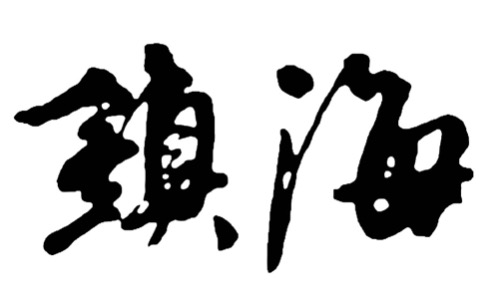

镇海区位于浙江省宁波市境东北部，中国大陆海岸线中段，长江三角洲南冀，东海沿岸。东屏舟山群岛，西连宁绍平原，南接北仑港，北濒杭州湾，与上海一衣带水。2013年1月29日中华人民共和国住房和城乡建设部列宁波市镇海区为第一批国家智慧城市试点。镇海区辖4个街道、2个镇，2005年底，户籍人口22.49万人，陆地面积218平方公里，海岸线长21公里。属亚热带季风气候，四季分明，雨量充沛。
镇海历史悠久，小港横山下、沙溪蛇山山麓，均发现有新石器时代人类居住的遗迹。
春秋末越国建国后，其地始有所归属。
秦王赢政二十五年（前222年）置会稽郡，立句章县，因本地处句章县治之东，故称句章东境，为时843年。
唐武德4年（621年）析古句章，分置姚、鄞两州。八年，更鄞州为鄮县，本地改称鄮县东境。唐元和四年（809年），在鄮东甬江口建望海镇，为镇海建治之始。
后梁开平三年（909年）5月，吴越王钱镠巡视明州，筑城于望海镇；闰八月，钱镠因望海镇地滨海口，有渔盐之利，奏置望海县（《太平寰宇记》），为建县之始。未几改为定海县。当时县境仅辖清泉、灵绪、崇邱和金塘四乡。
宋熙宁十年（1077年）划鄞县灵岩、泰邱、海晏三乡归定海，元丰元年（1078年）划金塘隶昌国，清泉析为东西两乡，自此县辖七乡，定为上县。
元时建置袭宋制。明洪武二十年（1387年），昌国废县改卫，原昌国县境（今舟山市）统隶于定海县，直至清康熙年间。
康熙二十六年（1687年）改原定海县为镇海县，定海建名达778年。次年，析出原昌国境另建定海县。至此，舟山归属镇海为时300年。镇海县建置相沿民国时期未变。
中华人民共和国建立后，因政治和经济建设等因素，建置更迭与县境变化甚频。1954年底，龙山北部10个乡镇划归慈溪县（今慈溪市）；慈东的河头、长石等5乡划属镇海；杭州湾口滩浒岛划归嵊泗。1958年自余姚县划入汶溪乡；同年底撤县并入宁波市，1963年1月恢复镇海县建置。1985年7月，再次并入宁波市，同年10月正式撤销县建制，建立宁波市镇海区，镇海县名共历299年。县自始建至撤销为时1077年。